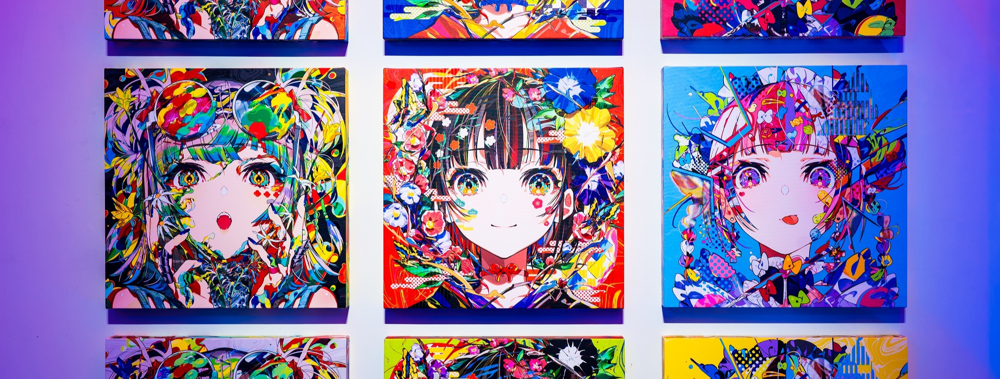
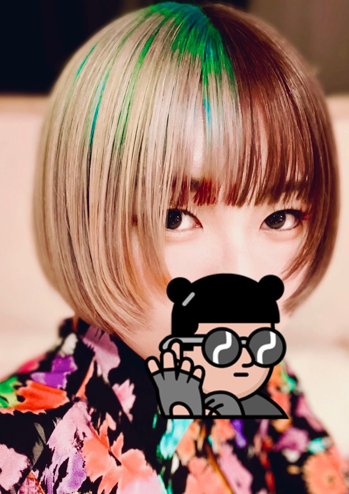
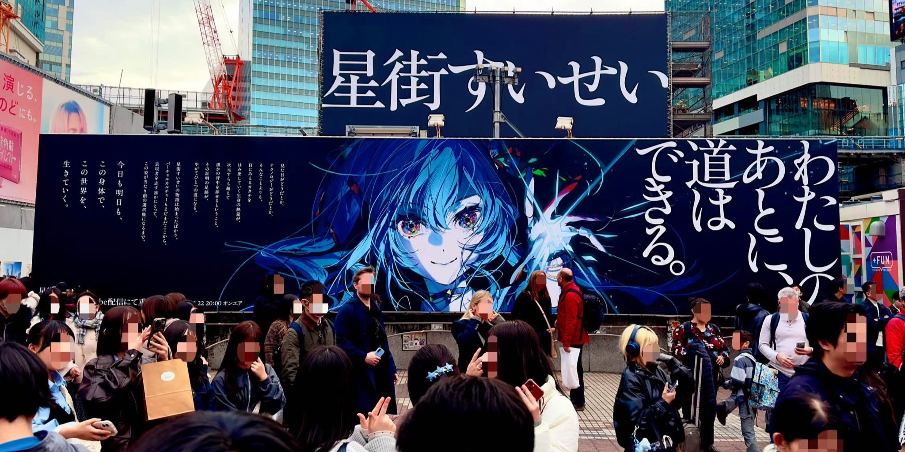
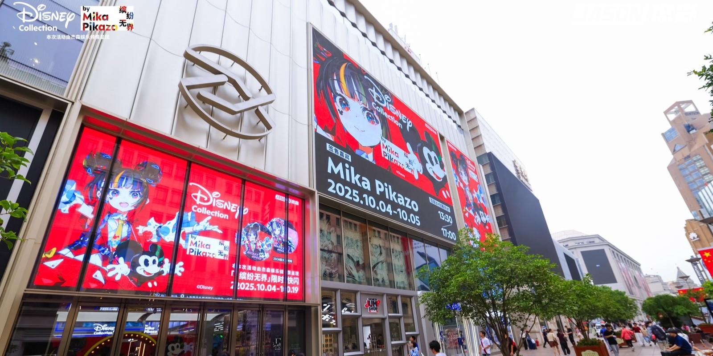
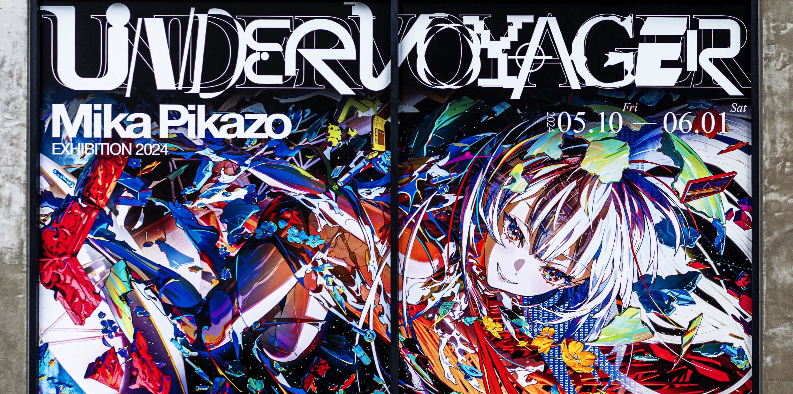

É uma ilustradora e designer de personagens japonesa. Artista prolífica tanto em produção criativa quanto em engajamento público, ela é conhecida por seu estilo distinto, caracterizado pelo uso ousado de cores vivas e saturadas e pela preferência por retratar personagens jovens com proporções inspiradas em animações e mangás japoneses.
Mika Pikazo nasceu em Tóquio em 1993 e cultivou o desenho como uma paixão desde a infância. Inicialmente convencida de que faria da ilustração sua carreira,
ela hesitou após enfrentar algumas dificuldades ao longo do caminho. Após se formar no ensino médio e ainda incerta sobre seu caminho, optou por se mudar
temporariamente para o Brasil, país cujo cinema e música admirava, para iniciar uma fase de exploração artística, após a qual decidiria se e como tornaria
a arte sua profissão.
Durante sua estadia no Brasil, Mika se dedicou a aprimorar suas habilidades de desenho, explorando diferentes estilos e técnicas, e
compartilhando seu trabalho nas redes sociais.Ao final dessa jornada, decidiu retornar ao Japão, concluindo seu primeiro trabalho profissional de ilustração
em menos de um ano.
Em 2018, ela fundou a THE MOON STUDIO juntamente com Kaguya Luna, uma agência criativa para YouTubers virtuais. No final daquele ano, a agência apresentou o projeto KOTODAMA TRIBE, criando sete modelos de personagens e realizando audições para encontrar os "talentos virtuais" correspondentes.
Antes do fechamento prematuro do estúdio, ele conseguiu lançar a VTuber Pinky Pop Hepburn, que permaneceu como a única artista temporariamente ativa do projeto.

Ilustração de um outdoor em frente à estação de Shibuya e do underground plaza feita para o anunciamento do show de Hoshimachi Suisei em 22/03.

Pop-up e exibição larga excala em Shanghai em colaboração com Disney collection, com sendo exibidas em diversos outdoors e anúncios por Shanghai.

Exibição "UNDER VOYAGER", um espaço 3d experimental que mescla exibição das ilustrações em quadros com telas e video de uma maneira que você nunca viu.